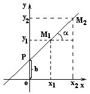

6.2.4. Уравнение прямой, проходящей через данную точку в заданном
направлении
Пусть прямая составляет угол  с
осью
с
осью  . Угловым коэффициентом прямой
. Угловым коэффициентом прямой  называется число .
называется число .
с
осью . Угловым коэффициентом прямой называется число .Прямая может быть задана точкой  и
угловым коэффициентом или двумя точками и
и
угловым коэффициентом или двумя точками и  .
.
и
угловым коэффициентом или двумя точками и .Уравнение прямой с угловым коэффициентом может быть получено из общего уравнения
прямой  , если , тогда
, где и
. Пусть прямая пересекает ось
, если , тогда
, где и
. Пусть прямая пересекает ось  в точке .
в точке .
может быть получено из общего уравнения
прямой , если , тогда
, где и
. Пусть прямая пересекает ось в точке .Из уравнения прямой, проходящей через две точки, имеем
Отсюда
Уравнение прямой,
проходящей через две точки в заданном направлении
Таким образом,
Уравнение полученной прямой принимает вид уравнения прямой
с угловым коэффициентом , если  .
.
, если .